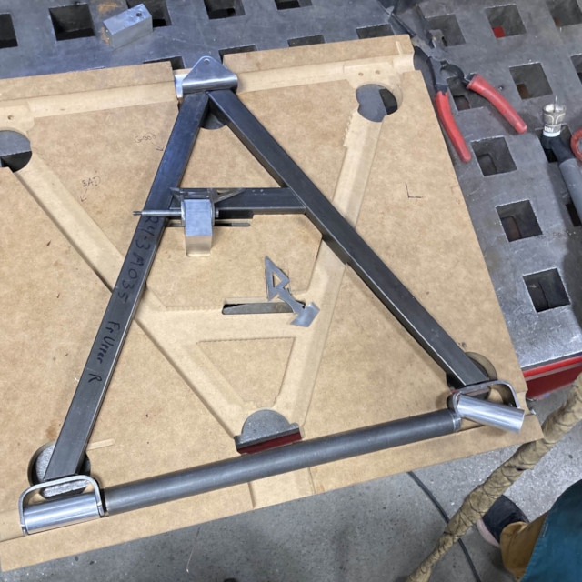
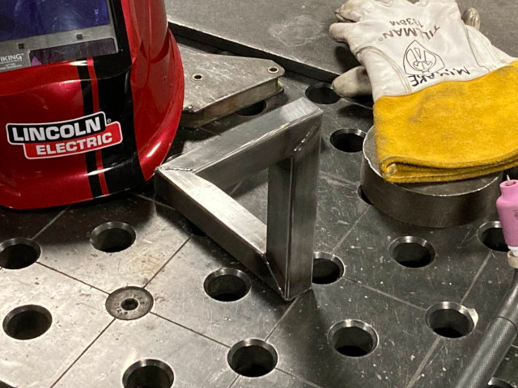
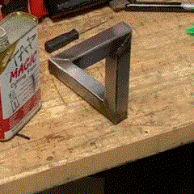

Welding Blog
My First Hands-On Introductions to Welding
My very first experience performing any form of hands-on welding was at a Boy Scout summer camp in my youth. The instruction was as a part of the welding merit badge, and it mostly focused on a surface-level understanding of welding safety, terminology, pros/cons of different welding processes, and welding career opportunities. I was also instructed on how to MIG weld a small project—a decorative eagle from a kit. Since I was entirely inexperienced and was not provided with much opportunity to practice beforehand, my welds at the time were quite porous and only suitable for its use as a low-strength art piece. Despite this, I had a great deal of fun earning the welding merit badge and wanted to continue to learn.
Bright College Days
Case Western Reserve University is home to the largest open-access makerspace in the United States: Sears think[box]. In addition to my engineering studies, one of my goals at school was to use the resources available to me at think[box] to learn about different manufacturing processes. Especially with my involvement with the school's SAE Baja Team CWRU Motorsports (read more about that here), I was able to learn how to use milling machines, lathes, and how to TIG weld steel and aluminum. While think[box] provides a solid safety training before I was permitted to weld there, they did not have nearly as many instructional resources for learning how to weld well. Instead, I relied on advice from more experienced welders on the Baja team. With a few months of practice and advice, I was eventually permitted to do welding on the Baja suspension control arms (a 2023 model-year arm is shown on the right). These were an excellent excercise for beginning welders since they were a smaller part which could be more easily repositioned compared to the frame. Additionally, the material is the same as the tubular steel used on the Baja frames: thin-walled 4130 alloy steel.
From this experience, I learned a great deal about the importance of good fitment before the welds and keeping the steel parts clean before welding. Poor fitment in the form of interference results in parts which will not fit into the fixture, which results in additional processing to either grind or cut away the interfering faces. This leads to increased time spent by our welders, which is particularly harmful for the tight timelines needed to manufacture a prototype off-road racecar each year. A rushed grind job to remove interfering material can occasionally lead to the other form of poor fitment: gaps between parts. While some clearance between parts is necessary to assemble the parts into the fixture, excessive clearance (such as gaps larger than the thickness of the steel tubing) can make the welds significantly more difficult to perform and can lead to quality issues down the road. Without an adequate backing plate, it can be difficult to bridge large gaps without compromising the integrity of the weld. Additionally, since we lack the capabilities for subsurface NDT inspections (such as radiographic or ultrasonic testing), our team is unable to confirm that the filled gaps consist of full-thickness metal which is entirely fused to the base material without porosity, slag inclusions, or cracks. Lastly, through multiple mistakes, I learned the importance of properly cleaning the metal before welding (especially for TIG or aluminum). The slightest contamination on parts can lead to oxidation of the steel or aluminum parts during the weld. Often, this can lead to porosity or slag inclusions which need to be ground out of the part before rewelding. This often leaves a gap which needs to be filled, and results in needing an additional heating of the material which can negatively affect the microstructure in the heat-affected zone (HAZ). For welding tubing, it was especially important for our team to double-check that we cleaned the inside of the tubes near the welds before assembling the fixtures. Once the fixture is put together, it is difficult for us to visually inspect if the inside of the tubes were cleaned. And if the contamination is found during welding, we need to grind away the weld, remove the tubes from the fixture, clean them, reassemble the fixture, and only then can we restart the welding process. Many hours have been lost due to these mistakes.
Additional details about my welding experience on CWRU Motorsports can be found in my portfolio.
Personal Welding Projects
While practicing my TIG welding skills for Baja, I got bored of doing nothing but excercises. I wanted projects that I could take with me as either a practical item or a decorative work of art. As such, the following are an assortment of projects that I made either for practice or for a practical purpose.
"Impossible" Penrose Triangle
On the right is my implementation of a so-called Penrose Triangle—an object which appears as though it should not exist in ordinary three-dimensional Euclidean space. The series of just three right-angles in the 'X', 'Y', and 'Z' directions should not be able to loop back on itself. Rather than forging a pact with a Lovecraftian entity for demonic warlock powers, I instead opted to create an optical illusion which only works from the perspective of a single point.
The actual creation consists of four tubes instead of just the three as it appears at first glance. The fourth tube overlaps with the first when viewing from just the right angle. This generates the illusion of the three tubes looping back on itself.
I decided to make this for a couple reasons: I thought it would look cool as a wallpaper , and it was a good practice for my welding and fixturing skills. It was crucial that the tubes lined up just right when viewed from the correct point. This required relatively precise 90° miter joints. It was also good practice for me to be welding a combination of flat butt joints and 90° fillets—from both inside and outside angles. Overall, I thought it was a fun project.